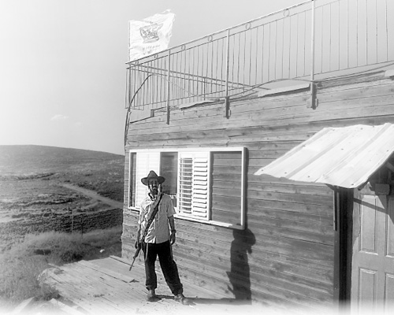

Shlichus Amongst the Hilltop Outposts of the West Bank
R’ Menachem Bakosh lives in Adei Ad, an isolated place with no fence surrounding it, deep in the heart of hostile Arab territory. * He reaches out to youth in the area, not only to strengthen Jewish settlement in Eretz Yisroel but also to show them the beauty of Torah and Chassidus. * He describes h

There are dozens of outposts throughout Yehuda-Shomron, big and small, where hundreds of families live. A significant number of them are located in highly strategic areas and have helped save the lives of soldiers and settlers. But the politicians in the government only care about what some bootlickers will say. The only thing that matters is the opinion of those who sit in ivory towers and are supported by money that pours in from the EU and other haters of Israel around the world.
When it comes to expelling Jews from their land, they consider all means kosher. When the operation to destroy Migron began, and settlers in the Binyamin district saw large military forces heading their way, settler leaders called the district unit commander, the battalion leader and the general. These three officers calmed the settlers when they said it was merely a military exercise. When some time passed, the settlers realized they had been conned. Hundreds of soldiers and policemen surrounded all the houses of the yishuv and viciously destroyed three of the homes.
We visited an outpost known as Adei Ad, which is not far from Migron. It sprang up over a decade ago and is located southwest of the veteran yishuv, Shiloh. Its residents grow flowers, fruits and vegetables in hothouses – melons, watermelons, olive trees. They also have an organic bakery and produce homemade cheese, most of it designated for export.
Among the twenty-five families lives the shliach, R’ Menachem Bakosh, who does tremendous work there and in other outposts throughout the Binyamin region.
We met R’ Bakosh late at night as he closed his pizza store and was on his way home.
“There are about twenty families at our yishuv, but in physical size, it is bigger than yishuvim with hundreds of families and more. The principle that guided the founders was expansiveness rather than building in tight groups.”
In Adei Ad one cannot go out the door of his home and encounter the door of his neighbor. The point of the game here is to restrain Arab expansion. The settlers want the Arabs to live in constrained clusters.
Everyone who knows R’ Bakosh knows that he is not a man of words. He is a doer. We asked him about his thoughts, about his shlichus, his work with youth, and the difficulties. Right before we spoke to him, he had been released from military jail after sitting half a year for the crime of obstruction of a policeman who wanted to destroy his home.
“I was shocked when I heard my sentence and the reasons given. They were fictions and lies, but the army is hard to argue with.”
The apple did not fall far from the tree. Menachem is the son of shluchim in Beit El and he grew up in an atmosphere of shlichus all his life. Not surprisingly, immediately after he married he knew he was dedicating his life to shlichus.
“I was born in Beit El to French immigrants. At first, we were not Chassidim. My parents were Mizrachi and life was about love of the land. When I was nine, a horrifying murder of a resident of our yishuv took place by bloodthirsty invaders. My father and the rest of the members of the yishuv went out to protest.
“The feeling at the time, under Rabin’s government, was that Jewish blood was expendable. A month after the demonstration, my father was arrested for shooting into the air. It was a lie, but they were looking for a scapegoat. While he was in jail, he studied Tanya and got to know some Lubavitchers, including the mashpia R’ Zalman Notik.
“When he was released, our home turned in the direction of Chabad and hiskashrus to the Rebbe. That year, I was sent to a Chabad camp organized by the shliach R’ Binyamin Edery, now of Japan, and I returned home a Chabadnik.
“I was sent to Toras Emes in Yerushalayim and my brothers also went to Chabad schools. Slowly, our way of dress changed and our home began to look Chassidish. Our family became the Lubavitchers to turn to in the yishuv.”
He completed his yeshiva studies in the Chabad yeshiva in Tzfas.
“After I married, we lived in Yitzhar and we looked for a shlichus from the very start. Since Yitzhar already had a shliach, we looked elsewhere. Just two and a half months later, we went to Adei Ad.”
Is there a difference between outreach at an established yishuv and outreach at an outpost?
“In general, it is very hard to work with hilltop youth. These are a small group of Jews who are extremely clannish due to their fear of Shabak agents. Whoever doesn’t think like them is excluded from their group. I was previously acquainted with the hilltop youth and they were happy that we came. Some of them looked askance at the emphasis on Moshiach and Geula, but this topic quickly made its way in.”
The Bakosh family has been living at Adei Ad for five years. Their nearest neighbor lives 500 meters away. R’ Menachem runs a pizza store in the afternoon and evening.
“The pizza store is a Chabad house in every respect. Videos are shown of the Rebbe. For many young people in the area, this is their regular gathering spot and we talk to them about the Rebbe and about Moshiach.”
In addition to pizza, R’ Bakosh runs a sort of Talmud Torah for the children of Adei Ad and for children of other outposts in the area. He does programs for children, like arranging a Lag B’Omer parade and activities around holidays.
“We have farbrengens for adults on special days in the calendar. I learn one-on-one with people in the yishuv’s one shul. There is a nucleus of people who are called ‘Rambamistim’ who conduct themselves according to the Rambam and we learn the daily Rambam together.”
A MODERN BLOOD LIBEL
Before getting into a discussion about his unusual outreach work and life in constant fear of the bulldozers of the IDF’s Civil Administration, as well as Arab terrorists, we asked him about his yeshiva in military prison.
“It was about a year after we married. On 20 Cheshvan I was on my way to the base where I served in Yerushalayim, when I heard that large military and Yassam forces were surrounding the yishuv and approaching my house. I took off my uniform and joined the residents who bodily defended the yishuv. Nearby was a container/trailer in which six young friends who had joined the yishuv lived in.
“I had taken off my uniform so they wouldn’t accuse me of rebelling against the army. Before that, before the resistance began, the evacuation commanders, who knew I was a soldier, threatened me that they would sentence me and put me in military prison for a long time. I ignored their intimidation tactics. In the past I had opposed expulsions in a non-violent manner and had been arrested and released, but when you are an active service soldier, it’s different. At a certain point, the tractors destroyed the structure and the atmosphere got more heated. The police acted more brutally than usual. They began hitting women and children for no reason. I restrained myself and did not get involved. I was a soldier and a married man, but when I saw that the situation was getting out of control and people were being injured, I went over to the assistant unit commander who was overseeing the eviction and rebuked him for the violence. He angrily slapped me. In the meantime, the structure was completely demolished. It was a sad sight, particularly when the Arabs in the surrounding villages build as they please. When the police left, I put my uniform back on and headed off to the base.
“A week later, I was arrested by the military police and was accused of throwing stones at a soldier, an accusation which all the military cameras proved was false. They tried to accuse me of attempted murder! I denounced this as a lie until I realized they were not interested in the truth. After lengthy sessions I was sentenced to a half year in prison in Tzrifin, and after getting one third off, I was released.”
How did you feel being falsely accused?
“I was protesting because I live in this outpost. It is understood that I didn’t lift a hand to anyone, and this whole trial just clarified exactly what the judicial system in this country is worth. It’s no wonder why the leaders look the way they do. The trial was supposed to weaken our stance in the struggle for Eretz Yisroel. They knew that they were jailing a father of a baby for half a year although he was completely innocent.
“When I was arrested, I refused to admit to what they were accusing me of. They had no evidence, so they tried to get a confession out of me. The military prosecutor said to me that if I did not confess, they would ask for more and more extensions to my incarceration for the purpose of further investigation and I would sit in jail without a trial for months. They said, ‘Forget about your baby daughter, about your wife. We will destroy your life.’
“It wasn’t easy withstanding this psychological torment, but I wasn’t going to confess to something I didn’t do. In the end, the judges realized that a three month imprisonment without filing charges was over the top.”
What did you do all that time in prison and how did they treat you?
“Whoever heard why I had been arrested was supportive and this showed that the people are with us. As a Lubavitcher Chassid I made use of the circumstances for shlichus, for shiurim in Gemara and Chassidus, and for mivtzaim with the soldiers in jail. That gave me a lot of chizuk.
“Every Sunday, the military police runs what they call ‘Mivtza Malbish’ (Operation Appearance) when they look for soldiers whose manner of dress is not up to par. We turned Mivtza Malbish into Mivtza T’fillin and every Sunday, all the soldiers put on t’fillin.
“I had a chavrusa with one of the soldiers who greatly strengthened his Jewish commitment as a result of our learning sessions. More soldiers than usual began to visit the jail synagogue.
“On Chanuka I was in a difficult situation. In prison, there is one menorah for all the soldiers. It is lit in the dining room, and when we leave it is extinguished. I wanted to use olive oil and to light in the doorway of the cell. At first, the prison administration refused my request. Until then, I was an obedient soldier, but this time I told them I would not sleep and would not eat. They finally acceded to my request. Oddly enough, it was in the jail itself that the commanders showed more compassion and concern for my needs.”
• • •
After four months in jail, R’ Menachem celebrated his release. The seudas hodaa took place at his parents’ home in Beit El. Many came to show support.
CHILDREN WAKE UP AT DAWN TO LEARN CHASSIDUS
R’ Menachem reached out to the residents of his area before he sat in jail and much more so upon his release.
“The story behind our Talmud Torah is interesting. The davening at our shul is at dawn and residents wake up before dawn. Before the davening, I would learn Rambam and Chassidus with someone. Children would sit next to us and listen and our chavrusa turned into a sort of shiur. When I finished with him, I learned Tanya and sichos with the children.
“On mornings that I found it hard to get up early, they would come to my house to wake me up. This lasted for several months until I was told by their teachers in school that they might be learning well with me, but the fact that they were up so early in the morning made them nod off in class. We decided to change our learning time for the afternoon. Every day, we gather in the shul. I consider my work with the kids my main shlichus.
“I recently wrote to the Rebbe about a number of things and kept opening to letters about learning with children. A Torah library just opened with books on Jewish topics that are appropriate for them. On Shabbos, after the davening, which ends at 7:00, the children sit down to a Chassidishe farbrengen that continues for a few hours! Within a few weeks, they learned Meseches Middos by heart, and they are continuing to learn Mishnayos and Tanya.”
The children feel so close to him that before Rosh HaShana last year, they called him and asked him to leave the base where he was serving to help them with a soccer game. He had to explain to them that he was on duty and could not leave. They called his commander and convinced him to let Menachem go. When he arrived, he saw that the children had arranged a surprise party in his honor to express their appreciation to him.
“I was moved and so surprised by what they did.”
Every Shabbos, farbrengens take place in shul for the adults. They start after seven and sometimes end at noon!
“On Shabbos, it is much easier to work with adults. They are less preoccupied with parnasa and there is a feeling of serenity. Here at the yishuv, everybody loves the Rebbe. I am sometimes asked to help someone write to the Rebbe through the Igros Kodesh.
“I have a good friend here. We got married at the same time. After some time, I had children already while he did not and this bothered me. When I was in 770 last Tishrei, I decided to daven for him. On Shabbos B’Reishis I stood next to the Rebbe’s shtender and asked for a bracha for children. I also put a request for him in a volume of Igros Kodesh and opened to an answer about children. I was sure he would have a child this year.
“On Shabbos Noach, one week later, we all farbrenged together at the outpost with a big bottle of mashke. I said to him, ‘The Rebbe gave a bracha and what you need to do is make good hachlatos and, with Hashem’s help, you will have a yeshua.’”
SODOM-LIKE GOVERNMENT
One of the most painful things to deal with is the Leftists and those who constantly back the Arabs, encouraging them to attack Jewish property and lives. In a normal country, this would be called treason. Military authorities and the police are afraid of them and deal harshly with their fellow Jews. If someone is an Arab, nobody will stop him from building houses and storage places, planting vineyards and olive trees, without permits. If he is a Jew, he will need to wait for permits.
“The injustice is unbelievable and we feel it all the time. I sometimes read the articles in Beis Moshiach about the unfairness, and I think that maybe there are people who believe that the reports are exaggerated. The truth, however, is far worse.
“Two days after my first daughter was born, two of my horses were stolen from my stable. As a law-abiding citizen, I called the police and some time later, they showed up along with a military tracker. They followed the horses’ tracks and reached a nearby Arab village where they stopped. I asked them – What happened? Why did you stop? They did not explain.
“I had lost valuable property and I angrily said to them that if they did not go in, I would find a way to get in. On Sunday, I got a call from the police. ‘Are you the one who had horses stolen?’ I said yes, and the officer asked me to come and testify. When I arrived at the station, two policemen handcuffed me. At first I thought it was an honest mistake, but it wasn’t. They brought me to court and asked the judge to authorize holding me in prison, because I had planned on entering an Arab village. I was flabbergasted.
“Apparently this was too much for the judge too. He listened to the police prosecutor and rebuked him. The judge got up and said to the policeman that he would check where I am every few hours to see if I was still under arrest.
“This is the situation we are living in. Instead of the police chasing our enemies, they pursue the settlers. There’s a person living here who was locked up for a year, because they suspected he did something. When it turned out that he did nothing, nobody thought of apologizing to him or compensating him. He was released and that was all, like nothing happened.
“Tishrei of two years ago, there was a shooting attack at the junction that leads to our yishuv and to some other yishuvim. It was a miracle that only one person was lightly wounded. Afterward, all of the residents of the outposts in the area made a protest march. On the way, we passed an olive grove belonging to Arabs and saw them trimming the branches in order to improve the trees.
“The next day, this was a headline in HaAretz. Next to a picture of people passing the trees, the reporter had written about the destruction wreaked in the grove. Even if we wanted to prune olive trees, we would not have been able to trim so many trees. The following day, an agronomist from the Civil Administration, an organization not known for its great love for settlers, showed up and said the whole thing was nonsense. It was obvious that trained farmers had done the work for the sake of improvement. On the flip side, Arabs regularly destroy vineyards and groves that are owned by Jews, but you won’t read any articles about that in the papers.
“There’s a Jew here who invested his entire savings into a vineyard. One day, Arabs came and began destroying it. He called the police and the army, but it was the season for harvesting olives and they were busy protecting Arabs. Three hours later, one policeman showed up, wrote down the complaint, and left. Of course, nothing was done and nobody was arrested.
“A few years ago, I was hit by a rock in the village of Khavara. I called the police but nobody came. I got out of my car and began throwing rocks back at them and police came within minutes. They wanted to arrest me, but since I was bloody from the rocks thrown at me, they had pity on me.
“It has become a sad joke among the settlers that if you want the police to come, you tell them that we are attacking Arabs. That brings them in a hurry.
“Most of the ‘price tag’ acts of vandalism reported in the media are bunkum. The police know that, but choose to ignore it. In the village opposite us, a very hostile village, people walk around freely with weapons. In the center of the village there is a tumbledown mosque. They wanted to renovate it, so what did they do? They burned it in the middle of the night and began wailing that the settlers had burned it. Whoever heard that – even in the IDF – laughed. Everybody knows that no Jew would dare to enter there because it’s suicidal, but they got the publicity and money from several Israeli pro-Arab organizations that helped them build a new mosque. It’s the Jews who give the Arabs the courage to approach Jewish yishuvim and they often join them in the looting.”
I’m listening to all this and have one question. Isn’t it scary?
“Is it scary? The answer is yes, but it won’t stop us from doing what needs to be done and what we believe in. As someone who grew up with this in Yehuda-Shomron, sad to say, I’m used to it. I remember from my childhood that when we would travel to school in Yerushalayim, I would see cars that had been shot at. Just moments before, they had taken out Jews who had been murdered from those cars. I had a preschool teacher whom I loved. She had to stop near Ramallah to fix a flat tire and she was murdered.
“For a very long time, my parents would not travel together on the roads of Yehuda-Shomron so that if they would be attacked, one parent would remain alive to raise us. That was normal. Today, I know that we are living with the understanding that our surviving another day is uncertain. The lack of a sharp response on the part of the government towards attacks is what created this norm.
“Recently, there were two times that I felt really scared and I took action to defend myself. After all, we are living in a yishuv without fences and the houses are distant from one another. I had a small stable, a few meters from the house, and when the horses were stolen, I realized that the Arab thieves could just as easily enter my house. The massacre in Itamar frightened us tremendously, especially my wife. The fact that the army collected our weapons from us so we won’t, G-d forbid, attack Arabs, does not add to our sense of security.”
How do you feel about putting work into your house when you know that it can be demolished at any time?
“It is much more frustrating than you would think. The Arabs opposite us build as they please, while here, every inch of earth is acquired with much aggravation. I’ve wanted to put up a building for a Chabad house for years now, but the Civil Administration does not allow it. What is most infuriating is that in a regular city or yishuv you need to get a permit from the council or municipality, while here we need to get permits for every structure from the Minister of Defense and the Prime Minister. What it means if they destroy your home is that you will continue paying a mortgage for the next twenty years on a building that does not exist!
“There are some residents to whom the monetary loss is less important than Eretz Yisroel is to them. They bought three old buses and turned them into houses with bedrooms, a kitchen, and a bathroom. They placed these buses on a hilltop in order to create territorial continuity from the Jordan Valley. Each time they got an injunction they moved a few hundred meters. They recently received an injunction that says that the buses are illegal throughout the Binyamin area.
“Last year, we had a story here that seemed to be taken from other times and other places. On Sukkos, a resident received an injunction that he had to leave his sukka within a week.”
How is it possible to do mivtzaim with those policemen?
“When they destroyed my vineyard, a callous police officer stood there and screamed and threatened my daughter who wasn’t yet five years old. She cried hysterically and he smiled sardonically. The next day, I met him in a store and asked him if he would like to put on t’fillin. He looked at me in shock. He was afraid that I planned on doing something to him and he took a few steps backward, but I explained that despite everything, he is a Jew. ‘The only difference between me and you,’ I said, ‘is external. You wear a police uniform and I wear a Chabad uniform.’
“He was embarrassed and so taken aback. This is really what distinguishes us Chabad Chassidim. We don’t hate the police. We absolutely hate what they do, and we will fight it, but we don’t feel hatred towards them. When I was a guest at the outpost of Itzik Sandroi, we would fight the soldiers who came to evict us, but then we would offer them t’fillin. I remember being arrested then, as a minor. I was fourteen. On my way out, I went to all the soldiers and put t’fillin on with them.
Do you have plans to expand despite the obstacles?
“We constantly open to answers from the Rebbe in the Igros Kodesh about the importance of the work with youth. We started doing that, and when I am released from the army I plan on doing more.
“The situation here engenders confusion on the part of the youth. Young people, by nature, seek absolute truth. It is very hard for them to live with the falsehood here. Chassidus is the only thing that can provide them with truth. We want to turn the pizza store (until we get permission to build a Chabad house) into a place where young people will have a voice. We also want to step up activities in other ways, at all the hilltops and outposts.”
In conclusion:
“We need to increase Ahavas Yisroel. I won’t ask everyone to go up on the hilltops, because that does not seem to be what the Rebbe wants. If he wanted it, there would be tens of thousands more Jews today in Yehuda-Shomron, maybe more. What can strengthen the settlements here and Jews everywhere else in the world is achdus, to think before arguing and contradicting someone, to think before doing something if someone else will be hurt. This will surely give nachas to Hashem and hasten the immediate hisgalus of the Rebbe MH”M, and this darkness will be behind us.”
CONNECTING WITH THE YOUTH
Menachem is also involved in reaching out to young dropouts, including those who grew up in Lubavitcher homes. Those who know him speak about his ability to find a common language with these kids. Whoever was in contact with him ended up getting back on track. “I feel that people don’t understand them,” says Menachem. He emphasizes that he is no expert, but simply someone in the trenches who is involved with kids.
“It’s hard for them, and the system does not identify their problems in time. They end up feeling frustrated and leaving the system. What can be done? Not every kid can fit into the rigid dimensions of the system.
“Some people think the kids are deaf to the tears of their parents, but parents don’t realize that these children are super sensitive. When I speak to them, they sometimes cry to me about how bad they feel about causing their mother or father pain, but they can’t and won’t continue living in a prescribed way just to make their parents happy.
“For these kids, what works is a program of work and learning. It gets them to learn better. We had some guys here who learned half a day and the other half they worked with goats and horses. They did well with the learning. They knew that after learning there would be something else to do and this made the learning easier and better.”
When a student drops out, parents and teachers feel they failed him.
“First, you really need to daven a lot when it comes to chinuch. The most important thing though, is to realize that people are not alike. Even brothers who seem very similar are not equal when it comes to learning and abilities. One might be able to sit and learn all day while his brother, who grew up in the same environment, cannot. There are boys who need space and the system does not work for them.
“I once asked a boy how his relationship with his parents got so bad, and he said that his father smiled at him when he was doing well, but when he veered somewhat from the path, the smile disappeared. ‘Apparently, he doesn’t really love me,’ the boy said.”
Can you give us examples?
“For a long time, we had two boys from beautiful Lubavitcher homes here at the yishuv. They had dropped out of the system. One of them, a refined boy, even when he went off the derech, was unable to do many things that went against Halacha. He grew his hair long and did not dress like a yeshiva bachur, but he could not touch his beard and he was careful about other things too.
“When I sat in jail, he would come with a friend to visit me and I was shocked by his deterioration. His hair was longer than ever; he had turned into a hippie. I sat there in shackles and was not in the best of moods, but when I saw him, I was really happy, even though his deterioration was apparent. He sat next to me and we sang the niggun of R’ Michel of Zlotchov. When we hugged at the end of the niggun, I knew he would come back, and that is exactly what happened. When I was released from jail we met again. He had cut his hair and had gone back to being a Tamim.
“Don’t blame these guys; help them. Listen to them. Sometimes, you can see how they stay away from everyone except for one teacher. Why? Because they feel that he really respects them. They need space and the most important thing is to love them, no matter what. That is the only way they will come back. Otherwise, why would they want to go back to someone who doesn’t love them, or who will only love them on his own terms?”
Nosson Avrohom. "Shlichus Amongst the Hilltop Outposts of the West Bank." Beis Moshiach, no. 847 (August 23, 2012).